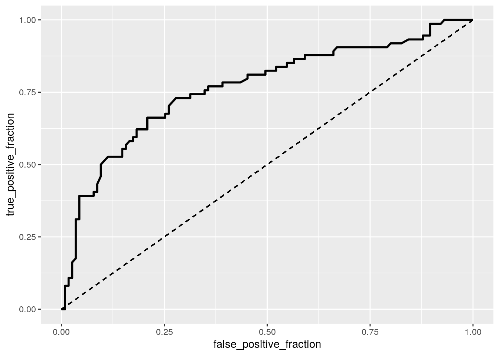
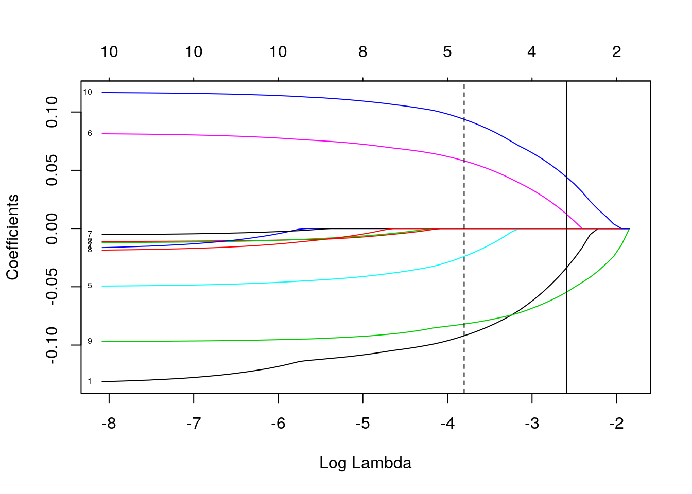

January 1, 0001
Victoria Martinez, vm22948
This is an R Markdown document. Markdown is a simple formatting syntax for authoring HTML, PDF, and MS Word documents. For more details on using R Markdown see http://rmarkdown.rstudio.com.
Introduction This data set is exploring the relationship of risk factors with low infant birth weight. It has 189 rows, 10 columns, 1890 observations, and the data was collected at Baystate Medical Center, Springfield, Mass during 1986. There is a ‘low’ column that is an indicator of birth weight less than 2.5 kg; an ‘age’ column with the mother’s age in years; an ‘lwt’ column with mother’s weight in pounds at last menstrual period; a ‘race’ column with mother’s race; a ‘ptl’ column with number of previous premature labours; and a ‘ht’ column with history of hypertension. There’s also a smoke column with smoking status during pregnancy; a ‘ui’ column with the presence of uterine irritability; a ‘ftv’ column with number of physician visits during the 1st trimester; and a ‘bwt’ column with birth weight in grams.
MANOVA and ANOVA test
library(MASS)
library(dplyr)##
## Attaching package: 'dplyr'## The following object is masked from 'package:MASS':
##
## select## The following objects are masked from 'package:stats':
##
## filter, lag## The following objects are masked from 'package:base':
##
## intersect, setdiff, setequal, unionnrow(birthwt)## [1] 189glimpse(birthwt)## Rows: 189
## Columns: 10
## $ low <int> 0, 0, 0, 0, 0, 0, 0, 0, 0, 0, 0, 0, 0, 0, 0, 0, 0, 0, 0, 0, 0, …
## $ age <int> 19, 33, 20, 21, 18, 21, 22, 17, 29, 26, 19, 19, 22, 30, 18, 18,…
## $ lwt <int> 182, 155, 105, 108, 107, 124, 118, 103, 123, 113, 95, 150, 95, …
## $ race <int> 2, 3, 1, 1, 1, 3, 1, 3, 1, 1, 3, 3, 3, 3, 1, 1, 2, 1, 3, 1, 3, …
## $ smoke <int> 0, 0, 1, 1, 1, 0, 0, 0, 1, 1, 0, 0, 0, 0, 1, 1, 0, 1, 0, 1, 0, …
## $ ptl <int> 0, 0, 0, 0, 0, 0, 0, 0, 0, 0, 0, 0, 0, 1, 0, 0, 0, 0, 0, 0, 0, …
## $ ht <int> 0, 0, 0, 0, 0, 0, 0, 0, 0, 0, 0, 0, 1, 0, 0, 0, 0, 0, 0, 0, 0, …
## $ ui <int> 1, 0, 0, 1, 1, 0, 0, 0, 0, 0, 0, 0, 0, 1, 0, 0, 0, 0, 1, 0, 0, …
## $ ftv <int> 0, 3, 1, 2, 0, 0, 1, 1, 1, 0, 0, 1, 0, 2, 0, 0, 0, 3, 0, 1, 2, …
## $ bwt <int> 2523, 2551, 2557, 2594, 2600, 2622, 2637, 2637, 2663, 2665, 272…manova1<-manova(cbind(lwt,bwt)~smoke, data=birthwt)
summary(manova1)## Df Pillai approx F num Df den Df Pr(>F)
## smoke 1 0.036351 3.5081 2 186 0.03195 *
## Residuals 187
## ---
## Signif. codes: 0 '***' 0.001 '**' 0.01 '*' 0.05 '.' 0.1 ' ' 1summary.aov(manova1)## Response lwt :
## Df Sum Sq Mean Sq F value Pr(>F)
## smoke 1 343 343.12 0.3657 0.5461
## Residuals 187 175455 938.26
##
## Response bwt :
## Df Sum Sq Mean Sq F value Pr(>F)
## smoke 1 3625946 3625946 7.0378 0.008667 **
## Residuals 187 96343710 515207
## ---
## Signif. codes: 0 '***' 0.001 '**' 0.01 '*' 0.05 '.' 0.1 ' ' 1birthwt%>%group_by(smoke)%>%summarize(mean(lwt),mean(bwt))## `summarise()` ungrouping output (override with `.groups` argument)## # A tibble: 2 x 3
## smoke `mean(lwt)` `mean(bwt)`
## <int> <dbl> <dbl>
## 1 0 131. 3056.
## 2 1 128. 2772.pairwise.t.test(birthwt$lwt,
birthwt$smoke, p.adj="none")##
## Pairwise comparisons using t tests with pooled SD
##
## data: birthwt$lwt and birthwt$smoke
##
## 0
## 1 0.55
##
## P value adjustment method: nonepairwise.t.test(birthwt$bwt, birthwt$smoke, p.adj="none")##
## Pairwise comparisons using t tests with pooled SD
##
## data: birthwt$bwt and birthwt$smoke
##
## 0
## 1 0.0087
##
## P value adjustment method: none.05/5## [1] 0.01I did 1 MANOVA, 2 ANOVAs, and 2 t-tests (5 tests): the alpha value used should be 0.01 after adjusting the significance level. A MANOVA test was used to determine the effect of the smoke status (0 and 1) on two dependent variables (lwt and bwt). There were no significant differences found among the two smoke statuses for the two dependent variables, Pillai trace = .04, pseudo F = 3.5, p > .01. Univariate ANOVAs for each dependent variable were conducted as follow-up tests to the MANOVA, using the Bonferroni method for controlling Type I error rates for multiple comparisons. The univariate ANOVAs for lwt was not significant while the bwt was significant, F(1,187)=.37, p-value>.01, and F(1,187)=7.0,p-value=.009, respectively. Post hoc analysis was performed conducting pairwise comparisons to determine which smoke status differed in lwt and bwt. The two smoke status were found to differ significantly for bwt only after adjusting for multiple comparisons (bonferroni). I think it doesn’t meet random sample since it comes from one medical center, and there doesn’t seem to me that there are extreme univariate or multivariate outliers. I don’t think the multivariate normality or homogeneity is met.
Randomization Test
library(ggplot2)
library(tidyverse)## ── Attaching packages ─────────────────────────────────────── tidyverse 1.3.0 ──## ✓ tibble 3.0.4 ✓ purrr 0.3.4
## ✓ tidyr 1.1.3 ✓ stringr 1.4.0
## ✓ readr 1.4.0 ✓ forcats 0.5.0## ── Conflicts ────────────────────────────────────────── tidyverse_conflicts() ──
## x dplyr::filter() masks stats::filter()
## x dplyr::lag() masks stats::lag()
## x dplyr::select() masks MASS::select()birthwt1 <-birthwt%>% mutate(race1 =recode(race, "3"="other", "1"="white", "2"="black"))
birthwt1 %>% summarize(cor(lwt,bwt, use="pair"))## cor(lwt, bwt, use = "pair")
## 1 0.1857333birthwt1 %>% select_if(is.numeric) %>% cor %>% as.data.frame %>%
rownames_to_column %>% pivot_longer(-1) %>%
ggplot(aes(rowname,name,fill=value))+geom_tile()+
geom_text(aes(label=round(value,2)))+
xlab("")+ylab("")+coord_fixed()The null hypothesis is that there is no correlation between birth weight and the mother’s weight. The alternative hypothesis is that there is a correlation between birth weight and mother’s weight. The correlation coefficient is .186 between bwt and lwt, which is surprising to me because I would think that if the mother’s weight goes up, so does the weight of the baby. The correlation heatmap shows there’s not really any strong correlation between these variables, either positive or negative.
Linear Regression Model
library(lmtest)## Loading required package: zoo##
## Attaching package: 'zoo'## The following objects are masked from 'package:base':
##
## as.Date, as.Date.numericlibrary(sandwich)
birthwt1$bwt_c <- birthwt1$bwt - mean(birthwt1$bwt)
birthwt1$lwt_c <- birthwt1$lwt - mean(birthwt1$lwt)
fitbwt <- lm(lwt_c~race1*bwt_c, data=birthwt1)
summary(fitbwt)##
## Call:
## lm(formula = lwt_c ~ race1 * bwt_c, data = birthwt1)
##
## Residuals:
## Min 1Q Median 3Q Max
## -49.353 -20.456 -5.913 12.527 126.297
##
## Coefficients:
## Estimate Std. Error t value Pr(>|t|)
## (Intercept) 19.096348 6.071896 3.145 0.001938 **
## race1other -27.863931 7.072437 -3.940 0.000116 ***
## race1white -18.122329 6.792223 -2.668 0.008313 **
## bwt_c 0.009353 0.009125 1.025 0.306699
## race1other:bwt_c -0.001943 0.010389 -0.187 0.851871
## race1white:bwt_c -0.001365 0.010006 -0.136 0.891684
## ---
## Signif. codes: 0 '***' 0.001 '**' 0.01 '*' 0.05 '.' 0.1 ' ' 1
##
## Residual standard error: 29.14 on 183 degrees of freedom
## Multiple R-squared: 0.1161, Adjusted R-squared: 0.09199
## F-statistic: 4.809 on 5 and 183 DF, p-value: 0.0003726ggplot(birthwt1, aes(lwt_c,bwt_c, color = race1)) + geom_smooth(method = "lm", se = F, fullrange = T)+
geom_point()+geom_vline(xintercept=0,lty=2)+geom_vline(xintercept=mean(birthwt1$lwt_c, na.rm=T), lty=2)## `geom_smooth()` using formula 'y ~ x'
resids <- fitbwt$residuals; fitvals <- fitbwt$fitted.values
ggplot()+geom_point(aes(fitvals,resids))+geom_hline(yintercept=0, col="red")ggplot()+geom_histogram(aes(resids), bins=20)coeftest(fitbwt, vcov=vcovHC(fitbwt))##
## t test of coefficients:
##
## Estimate Std. Error t value Pr(>|t|)
## (Intercept) 19.0963478 9.7234276 1.9640 0.051050 .
## race1other -27.8639308 10.2442325 -2.7200 0.007158 **
## race1white -18.1223292 10.1663647 -1.7826 0.076313 .
## bwt_c 0.0093531 0.0184955 0.5057 0.613678
## race1other:bwt_c -0.0019426 0.0189068 -0.1027 0.918275
## race1white:bwt_c -0.0013645 0.0188535 -0.0724 0.942383
## ---
## Signif. codes: 0 '***' 0.001 '**' 0.01 '*' 0.05 '.' 0.1 ' ' 1The mean/predicted mother’s weight for black mother’s with average birth weight is 19.096. The races other than white and black mother’s with average birth weight have predicted mother’s weight that is 27.864 lower than black mother’s with average birth weight for their infant. White mother’s who have an infant with average birth weight have a predicted weight that is 18.122 lower than black mother’s with an infant average birth weight. For every 1-unit increase in birth weight, the mother’s predicted average weight goes up .009 for this group. Slope of birth weight for other races is .0019 less than for black mother’s. The slope of birth weight for white mother’s is .001 than for black mother’s. The model explains about .1161 of the variantion in the outcome. The linearity and homoskedasticity looks like the points are more aggregated on the left side of the graph. It doesn’t look like the worst graph, but it doesn’t seem like it passes the assumptions. The normality graph is shifted to the left and is not centered. Mother’s with a different race than white or black with average infant birth weight with predicted average weight is 27.86 lower than black mother’s with average infant birth weight. This result was significant, and the others were not using the robust standard errors. This is different than without using robust standard errors, in which race1white and intercept were also significant too.
Regression Model
set.seed(348)
samp_distn<-replicate(5000, {
boot_dat<-boot_dat<-birthwt1[sample(nrow(birthwt1),replace=TRUE),]
fitbwt2<-lm(lwt_c ~ race1 * bwt_c, data=boot_dat)
coef(fitbwt2)
})
samp_distn%>%t%>%as.data.frame%>%summarize_all(sd)## (Intercept) race1other race1white bwt_c race1other:bwt_c
## 1 9.16387 9.697101 9.664017 0.01652433 0.01693168
## race1white:bwt_c
## 1 0.01694708The standard errors are higher after bootstrapping the standard errors compared to the linear regression model. The standard errors are higher for race1other and race1white for the regression model using robust standard errors versus the bootstrapped standard errors.
Logistic Regression
library(glmnet)## Loading required package: Matrix##
## Attaching package: 'Matrix'## The following objects are masked from 'package:tidyr':
##
## expand, pack, unpack## Loaded glmnet 4.1-1fitbwt4 <- glm(smoke~race1+bwt_c, family="binomial", data=birthwt1)
exp(coef(fitbwt4))## (Intercept) race1other race1white bwt_c
## 0.4940403 0.3418588 2.8149066 0.9990937probs <- predict(fitbwt4, type="response")
table(predict=as.numeric(probs>.5), truth=birthwt1$smoke)%>%addmargins## truth
## predict 0 1 Sum
## 0 97 32 129
## 1 18 42 60
## Sum 115 74 189library(plotROC)
ROCplot <- ggplot(birthwt1)+geom_roc(aes(d=smoke, m=probs), n.cuts=0)
calc_auc(ROCplot)## PANEL group AUC
## 1 1 -1 0.7658637plot(ROCplot)birthwt1$logit<-predict(fitbwt4)
ggplot(birthwt1,aes(logit, fill=smoke))+geom_density(alpha=.3, color="darkblue", fill="lightblue")+
geom_vline(xintercept=0,lty=2)ROCplot3 <- ggplot(birthwt1)+geom_roc(aes(d=smoke, m=probs), n.cuts=0)+geom_segment(aes(x=0, xend=1, y=0, yend=1), lty=2)
plot(ROCplot3)
calc_auc(ROCplot3)## PANEL group AUC
## 1 1 -1 0.7658637Controlling for birth weight, the odds of having a positive smoke status for race1other is .342 times odds for black mother’s. Controlling for birth weight, the odds of having a positive smoke status for race1white is 2.815 times odds for for black mother’s. Controlling for race, for every one unit increases in birth weight, odds of smoke status change by a factor of .999. The TPR is .568 which is the probability of detecting smoke status if they really smoke; the TNR is .843 which is the probability of a negative smoke status for healthy mother’s; and the PPV is the .7 which is the proportion classified as positive smokers who actually are. The accuracy is .735, which is how accurate the test is. The AUC is .766, which is the probability that a randomly selected mother with a positive smoke status has a higher predicted probability than a randomly selected person without a smoke status.
Logistic Regression
fitbwt5 <- glm(smoke~ftv+low+age+ptl+ht+ui, family="binomial", data=birthwt1)
exp(coef(fitbwt5))## (Intercept) ftv low age ptl ht
## 0.6975876 0.9904291 1.7348768 0.9832475 2.0101406 0.9674966
## ui
## 1.0015119probs5 <- predict(fitbwt5, type="response")
table(predict=as.numeric(probs5>.5), truth=birthwt1$smoke)%>%addmargins## truth
## predict 0 1 Sum
## 0 108 59 167
## 1 7 15 22
## Sum 115 74 189(108+15)/189; 108/167;15/22;108/115## [1] 0.6507937## [1] 0.6467066## [1] 0.6818182## [1] 0.9391304ROCplot5 <-ggplot(birthwt1)+geom_roc(aes(d=smoke,m=probs5), n.cuts=0)
calc_auc(ROCplot5)## PANEL group AUC
## 1 1 -1 0.6266745set.seed(1234)
k=10
data5<-birthwt1[sample(nrow(birthwt1)),]
folds<-cut(seq(1:nrow(birthwt1)),breaks=k,labels=F)
diags<-NULL
for(i in 1:k){
train<-data5[folds!=i,]
test<-data5[folds==i,]
truth<-test$smoke
fitbwt5<-glm(smoke~ftv+low+age+ptl+ht+ui,data=train,family="binomial")
probs6<-predict(fitbwt5,newdata = test,type="response")
diags<-rbind(diags,class_diag(probs6,truth))
}
summarize_all(diags,mean)## acc sens spec ppv auc
## 1 0.5885965 0.2180952 0.8357504 0.4845238 0.5447042The Accuracy is .651, which is the how accurate the test is; TPR is .647, which is the proportion of smoke status correctly identified; the specificity is .682, which is the proportion of non-smoke stauts correctly identified; and PPV is .939, the proportion classified as smokers who actually are. The AUC is .627, which tells us the model is not a good predictor overall.
After performing the 10 fold CV, the accuracy changed to .589, PPV is .485, TPR is .218, and specificity is .836. The AUC is .545, which is telling us how well are model is predicting. The value is very low, so it is not a good predictor. The in-sample had an AUC of .627, which higher than the CV but still not a good predictor.
LASSO
y<-as.matrix(birthwt1$smoke)
x<-model.matrix(smoke~bwt_c+lwt_c+ftv+low+age+ptl+ht+ui+race1,data=birthwt1)[,-1]
head(x)## bwt_c lwt_c ftv low age ptl ht ui race1other race1white
## 1 -421.5873 52.185185 0 0 19 0 0 1 0 0
## 2 -393.5873 25.185185 3 0 33 0 0 0 1 0
## 3 -387.5873 -24.814815 1 0 20 0 0 0 0 1
## 4 -350.5873 -21.814815 2 0 21 0 0 1 0 1
## 5 -344.5873 -22.814815 0 0 18 0 0 1 0 1
## 6 -322.5873 -5.814815 0 0 21 0 0 0 1 0x <- scale(x)
cv <- cv.glmnet(x,y)
{plot(cv$glmnet.fit, "lambda", label=TRUE); abline(v = log(cv$lambda.1se)); abline(v = log(cv$lambda.min),lty=2)}
cv<-cv.glmnet(x,y,family="binomial")
lasso<-glmnet(x,y,family="binomial",lambda=cv$lambda.1se)
coef(lasso)## 11 x 1 sparse Matrix of class "dgCMatrix"
## s0
## (Intercept) -0.4440146
## bwt_c .
## lwt_c .
## ftv .
## low .
## age .
## ptl .
## ht .
## ui .
## race1other -0.1305968
## race1white 0.0437866set.seed(1234)
k=10
data6 <- birthwt1 %>% sample_frac
folds <- ntile(1:nrow(data6),n=10)
diags<-NULL
for(i in 1:k){
train <- data6[folds!=i,]
test <- data6[folds==i,]
truth <- test$smoke
fit6 <- glm(smoke~race1,
data=train, family="binomial")
probs66 <- predict(fit6, newdata=test, type="response")
diags<-rbind(diags,class_diag(probs66,truth))
}
diags%>%summarize_all(mean)## acc sens spec ppv auc
## 1 0.6508772 0.6829365 0.6160317 0.5492677 0.6690188After running LASSO, the only predictor I could possibly use is race1. At first, I didn’t include race1, bwt_c, or lwt_c since I already used these but there was no predictor possible without it. I performed a 10-fold CV with the variables lasso selected, and the AUC turned out to be .669. For the first logistic regression without 10-fold, the AUC larger compared to this one. The second logistic regression with 10-fold was smaller than .669.